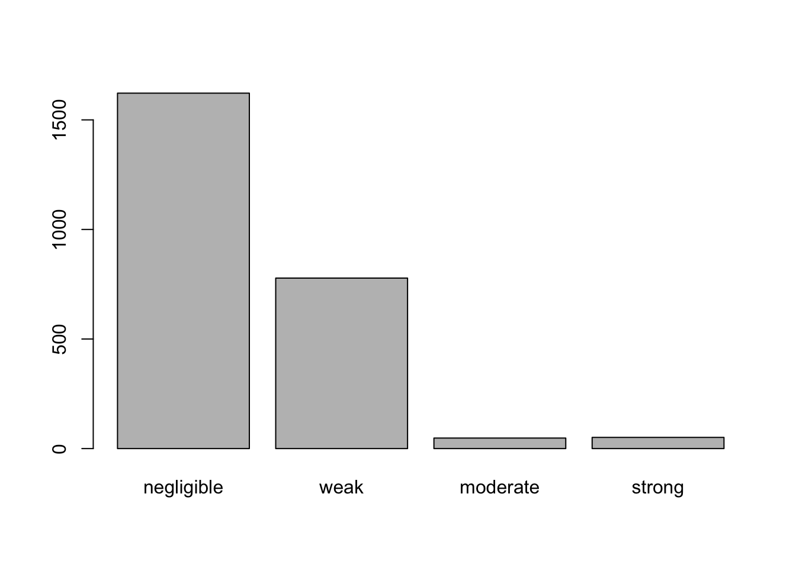

This is a quick demonstration of one way of dealing with these tasks. It is by no means the only correct way. There is a substantial level of subjectivity in Exploratory Factor Analysis and the method involves repeated evaluation and re-evaluation of the model in light of the extracted factors and their conceptual relationships with the analysed items. In other words, a good EFA requires you to get your hands dirty.
First, let’s read in the data. I would strongly encourage you not to “import” data into RStudio by clicking on menus but rather use code. This way, your script will contain a complete account of the analysis which is invaluable for situations when you return to your data after a long break from the analysis (this will happen!).
In today’s lab we will be using the work pressures survey (WPS) data available at the following link: https://uoepsy.github.io/data/WPS_data.csv The data contains responses from 946 workers from a variety of companies to the Work Pressures Survey. Your task in this week’s exercises is to perform a factor analysis of the main section of this survey (Job1 to Job50).
You can look at the survey taken by the study participants at the following link
Read the WPS data into R. Make sure to take a look at the variable names and data structure.
Produce a table of summary statistics for the variables in the data.
If you were to analyse this data for a research project hopefully leading to a paper, you would probably want to perform sanity check on the variables, such as check if everyone is an adult (assuming this was a requirement for partaking of the study).
Check whether all participants in the study are adults.
Hints:
The unique() function will give us all the unique values in a variable
What could the variable doby represent?
The data look like a bit of a mess.. Some participants have the full year of birth, some only the last 2 digits. Let’s only extract the last 2 digits from all rows then.
Look at the help of the str_sub() function.
Use the str_sub() function to take only the last 2 characters.
Visualise the distribution of birth year.
Do you notice anything strange? If yes, how can you solve this?
Normally, you’d want to check other variables too.
For now, because we are focusing on EFA, we’ll just assume that the other variables are okay.
Subset to relevant data
Remember that the only variables we are interested in for our EFA are the job1 to job50 variables. Subset the data set to only include those variables.
Create a table of descriptive summary statistics for each variable.
This time try using the function describe() from the psych package.
Some of the variables appear to have values of 0, −1, as well as values larger than 7, even though all the questionnaire items are on a 7-point Likert scale.
Get rid of infeasible values.
Let’s now look at the score distributions per item and the correlations between pairs of items.
Look at the help for the pairs.panels() function from the psych package
Use the pairs.panels() function to produce the plots
IMPORTANT: Do not put too many plots into one figure!
Use subsets of ten variables each time. For example, look at the pairwise plots of the first 10 variables, then the next 10, and so on.
As you can see, while some of the items have pretty much bell-shaped distributions, some others are massively skewed (looking at you job49) or close to uniform (job9).
At this stage, you’d want to have a closer look at the wording of these troublesome items and see if you can spot any methodological issues that might account for these distributions.
If the items look fine, you might want to consider alternative correlation coefficients (e.g., polychoric correlations) that might be more suitable to items with weird distributions.
For now, let’s stick to Pearson’s correlation (r). Since we have NAs in the data, let’s just use complete observations.
Compute the correlation matrix of the variables.
Instead of looking at the \(50 \times 50\) matrix of correlations, look at the distribution of correlation coefficients from the lower triangular part of the matrix.
Hint: The function lower.tri(R) returns the lower triangular part of a matrix, i.e. the numbers below the diagonal.
If you want to be a little fancier, you can categorise the coefficients into negligible, weak, moderate, and strong correlations and plot a bar plot like this:
Rc <- cut(abs(R),
breaks = c(0, .2, .5, .7, 1),
labels = c("negligible", "weak", "moderate", "strong"))
barplot(table(Rc[lower.tri(Rc)]))
As we can see, most of the correlations are negligible and many are weak. There are some moderate and strong relationships in the data. This suggests that there might be multiple independent factors.
Check if the correlations are sufficient for EFA with Bartlett’s test of sphericity and if the sample was adequate with KMO.
A significant Bartlett’s test of sphericity means that our correlation matrix is not proportional to an identity matrix (a matrix with only 1s on the diagonal and 0s everywhere else). This is exactly what we want, so we’re happy!
Likewise, the sampling adequacy is pretty good. All items have a measure of sampling adequacy (MSA) in the \(>.7\) “middling” region and the overall KMO is bordering on the \(>.9\) “marvellous” level (I kid you not).
Given these results, we can merrily factor-analyse!
In order to decide how many factors to use, look at the suggestions given by parallel analysis and MAP.
Fit a factor analysis model to the data using 10 factors.
Since there is no good reason to expect the factors to be uncorrelated (orthogonal), use the oblimin rotation.
Before doing so, make sure you have installed the GPArotation package
OK, 10 factors looks like way too many as the last 2 have very few substantive loadings (>.33). Let’s look at a smaller solution, e.g. 9 or 8 factors and see if it’s still the case…
install.packages('GPArotation')
Here is when we would go back to the item wordings and try to see why these items might not really correlate with any other items. For instance, job11 (“I regularly discuss problems at work with my colleagues.”) might be ambiguous: does it mean that there are often problems or that if there are problems, I discuss them regularly?
For argument’s sake, let’s say, all of these identified items are deemed problematic so we should remove them:
cols_to_remove <- names(which(rowSums(x < .33) == 8))
df2 <- df[ , !names(df) %in% cols_to_remove]Check parallel analysis and MAP again.
Fit an 8-factor model to the new dataset.
We still only get 2 substantive loadings on the last factor, while we want at least 3. This also happens with the 7- and 6-factor solutions. But once we hit the 5-factor solution, we find a better structure:
m_5f <- fa(df2, nfactors = 5, rotate = "oblimin", fm = "ml")
fa.sort(m_5f)## Factor Analysis using method = ml
## Call: fa(r = df2, nfactors = 5, rotate = "oblimin", fm = "ml")
## Standardized loadings (pattern matrix) based upon correlation matrix
## ML1 ML5 ML2 ML4 ML3 h2 u2 com
## job39 0.74 -0.03 0.04 0.04 0.04 0.54 0.46 1.0
## job15 0.73 0.03 0.06 -0.03 0.00 0.56 0.44 1.0
## job26 0.67 0.04 -0.03 0.03 -0.06 0.46 0.54 1.0
## job45 0.62 0.11 0.03 -0.06 0.07 0.50 0.50 1.1
## job34 0.60 -0.09 0.00 0.23 0.01 0.34 0.66 1.3
## job37 0.55 -0.19 0.01 -0.07 0.10 0.29 0.71 1.3
## job38 0.50 -0.06 0.10 -0.19 0.17 0.37 0.63 1.7
## job47 0.49 0.28 -0.03 -0.01 -0.03 0.43 0.57 1.6
## job42 0.45 0.35 -0.09 -0.11 0.10 0.54 0.46 2.2
## job48 0.45 0.16 0.06 -0.08 0.07 0.33 0.67 1.4
## job25 0.41 0.35 0.01 -0.15 0.06 0.49 0.51 2.3
## job44 -0.01 0.74 0.00 0.13 0.05 0.54 0.46 1.1
## job4 -0.15 0.72 0.14 -0.01 0.02 0.48 0.52 1.2
## job33 0.07 0.71 -0.08 0.15 -0.03 0.54 0.46 1.1
## job24 0.12 0.66 -0.06 0.03 -0.02 0.52 0.48 1.1
## job5 -0.03 0.54 0.13 -0.20 -0.01 0.35 0.65 1.4
## job10 -0.07 0.49 0.17 -0.23 0.08 0.32 0.68 1.8
## job43 0.13 0.45 0.07 -0.07 -0.03 0.28 0.72 1.3
## job18 0.31 0.44 -0.09 -0.08 0.05 0.45 0.55 2.0
## job19 0.22 0.42 -0.08 0.18 -0.24 0.34 0.66 2.7
## job16 0.11 0.39 0.13 -0.24 -0.02 0.29 0.71 2.1
## job1 0.35 0.39 -0.04 -0.09 -0.01 0.41 0.59 2.1
## job30 0.25 0.38 -0.07 -0.03 0.04 0.31 0.69 1.8
## job8 0.23 0.37 -0.09 -0.10 0.18 0.37 0.63 2.6
## job7 0.14 0.32 -0.09 0.14 0.04 0.17 0.83 2.1
## job3 0.04 0.05 0.77 0.00 -0.05 0.60 0.40 1.0
## job9 0.06 0.08 0.72 -0.03 0.02 0.54 0.46 1.0
## job13 -0.10 -0.01 0.68 0.04 0.05 0.49 0.51 1.1
## job28 0.10 -0.08 0.58 0.20 -0.02 0.41 0.59 1.4
## job2 0.07 -0.13 0.54 0.03 -0.05 0.31 0.69 1.2
## job17 0.00 0.03 0.00 0.77 -0.02 0.58 0.42 1.0
## job6 -0.10 0.09 0.07 0.72 0.05 0.55 0.45 1.1
## job46 0.13 -0.01 0.11 0.63 -0.03 0.43 0.57 1.1
## job29 0.02 0.05 0.09 0.44 0.12 0.22 0.78 1.3
## job12 -0.36 -0.10 0.09 0.39 0.03 0.39 0.61 2.3
## job35 0.02 0.00 -0.01 0.07 0.72 0.52 0.48 1.0
## job41 0.12 -0.06 -0.06 0.04 0.67 0.47 0.53 1.1
## job32 0.00 -0.02 0.02 -0.02 0.64 0.41 0.59 1.0
## job36 -0.14 0.22 -0.02 -0.05 0.51 0.30 0.70 1.6
## job49 0.05 0.05 -0.01 -0.15 0.46 0.27 0.73 1.3
## job14 -0.06 -0.09 0.11 0.15 0.44 0.23 0.77 1.5
##
## ML1 ML5 ML2 ML4 ML3
## SS loadings 4.91 4.79 2.45 2.47 2.31
## Proportion Var 0.12 0.12 0.06 0.06 0.06
## Cumulative Var 0.12 0.24 0.30 0.36 0.41
## Proportion Explained 0.29 0.28 0.14 0.15 0.14
## Cumulative Proportion 0.29 0.57 0.72 0.86 1.00
##
## With factor correlations of
## ML1 ML5 ML2 ML4 ML3
## ML1 1.00 0.44 -0.03 -0.15 0.20
## ML5 0.44 1.00 0.04 -0.11 0.11
## ML2 -0.03 0.04 1.00 0.19 0.06
## ML4 -0.15 -0.11 0.19 1.00 -0.11
## ML3 0.20 0.11 0.06 -0.11 1.00
##
## Mean item complexity = 1.5
## Test of the hypothesis that 5 factors are sufficient.
##
## The degrees of freedom for the null model are 820 and the objective function was 17.24 with Chi Square of 15994.42
## The degrees of freedom for the model are 625 and the objective function was 3.82
##
## The root mean square of the residuals (RMSR) is 0.04
## The df corrected root mean square of the residuals is 0.05
##
## The harmonic number of observations is 940 with the empirical chi square 2821.86 with prob < 2.2e-275
## The total number of observations was 943 with Likelihood Chi Square = 3530.88 with prob < 0
##
## Tucker Lewis Index of factoring reliability = 0.748
## RMSEA index = 0.07 and the 90 % confidence intervals are 0.068 0.073
## BIC = -749.79
## Fit based upon off diagonal values = 0.96
## Measures of factor score adequacy
## ML1 ML5 ML2 ML4 ML3
## Correlation of (regression) scores with factors 0.94 0.94 0.91 0.91 0.89
## Multiple R square of scores with factors 0.89 0.89 0.83 0.82 0.80
## Minimum correlation of possible factor scores 0.78 0.77 0.66 0.64 0.59Also notice that the 8-factor solution accounted for 49% of the variance and the 5-factor one explains 41%. That is not a huge drop considering that, by choosing the 5-factor over the 8-factor solution, we reduce the dimensionality of the data (number of variables we have to deal with) by further 3 dimensions!
Looking at the loadings, we can see that only 4 items have substantial cross-loadings (on exactly 2 factors), which is not terrible.
Glance at the factor correlations of this final model, we see that only factor 1 and 4 are weakly-to-moderately correlated, which is not too bad! It allows us to claim that the factors (except for one) are largely independent of each other. This model accounts for about 39% of the common variance.
At this stage, we would go to the individual items, look at which factors load on which items, and try to figure out what is the common theme linking these items. For instance, let’s look at the factor ML5. I would start by looking at the items with the highest loadings, i.e., items 44, 4, 33, and 24. They all have three things in common: they address fairness, openness, and promotions/pay rises. Since we have multiple themes going on here, let’s look at the items with loadings in the .4-.6 range. A stronger theme of fair acknowledgement of performance emerges. Not all of the lower-loading items chime with this theme terribly well, but those that do not tend to have cross-loadings with other factor. I would therefore be reasonable confident that the factor taps into something that could be called “Fair recognition” (apparently this is referred to in the OrgPsych jargon as “Procedural justice”).